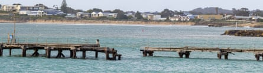
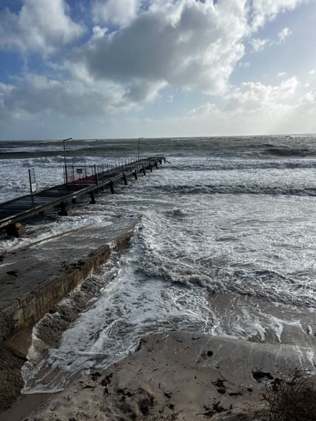
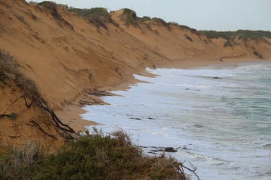

Abnormally high tides, strong winds and large waves have lashed Australia’s south-eastern coastlines this week, damaging jetties and infrastructure in communities facing “no end of problems” from an increase in severe conditions.
Prolonged winds whipped up large waves in the Southern Ocean, which have hammered south and west facing coastlines across South Australia, Victoria and Tasmania, said the senior meteorologist Angus Hines from the Bureau of Meteorology.
“If the wind pushes in the same direction for a long time … it actually starts to push the water against the country, and that can cause tidal levels to rise above where they would normally be,” he said.
Those winds, combined with a low-pressure system and the alignment of the sun and the moon – the gravitational pull of which causes tides to rise and fall – have led to higher than normal tides in several locations.
On Tuesday, tides in Outer Harbour, north of Port Adelaide, were about 65cm above the highest astronomical tide (a measure of the typical high-tide mark for the month, without additional weather effects).
In Port Phillip Bay in Victoria, tides were recorded approximately 40cm above the high-tide mark, and 30cm higher in Gippsland in the east of the state. Tides were expected to be even higher in Victoria on Wednesday afternoon, Hines said.
Sign up to get climate and environment editor Adam Morton’s Clear Air column as a free newsletter
Conditions were expected to ease by Thursday but there could be rough oceans across parts of coastal New South Wales over coming days, with the SES issuing a warning for damaging winds in south-eastern areas including Sydney Harbour, the Illawarra and Wollongong.
In the 24 hours to Wednesday afternoon, councils across South Australia’s coastline reported further damage to jetties, boat-launching facilities, shopfronts and foreshore infrastructure, as well as significant sand loss, said Adam Gray, the executive officer for the SA Coastal Councils Alliance.
‘A number of councils are telling me that their jetties have structurally failed’ … damaged jetties at Robe (above) and Normanville beach.
“A number of councils are telling me that their jetties have structurally failed,” he said.
Gray said it was the second such event to hit the state’s coastline in a month, after a major tidal surge and low-pressure system dealt significant damage on 26 and 27 May.
Councils were accelerating their coastal hazard adaptation planning in response, he said, and seeking greater support from the federal government to help cope with escalating risks due to storms and sea-level rise.
“We know that councils and their communities are seeing increasing frequency of inundation and erosion events, and an accumulation of erosion, which is causing them no end of problems as far as asset management,” Gray said.
A series of storm fronts in recent weeks progressively weakened the jetty at Normanville beach on the Fleurieu Peninsula, said Rhett Day, the operations manager at the beach’s Aqua Blue restaurant and kiosk.
The storm and king tide in late May loosened the sleepers and made the jetty unsafe, before another event in early June “bashed it a bit”, he said. Then on Tuesday, a seaward section about 10 metres long collapsed completely into the water, leaving “just a couple of pylons sticking out on their lonesome”.
Jetties at Kingston and Robe on the Limestone Coast were also damaged.
Climate change is causing rising sea levels and more frequent and intense storms, which are exacerbating coastal hazards such as inundation and erosion.
Erosion at Beachport on SA's Limestone Coast.Photograph: Heather Burdon